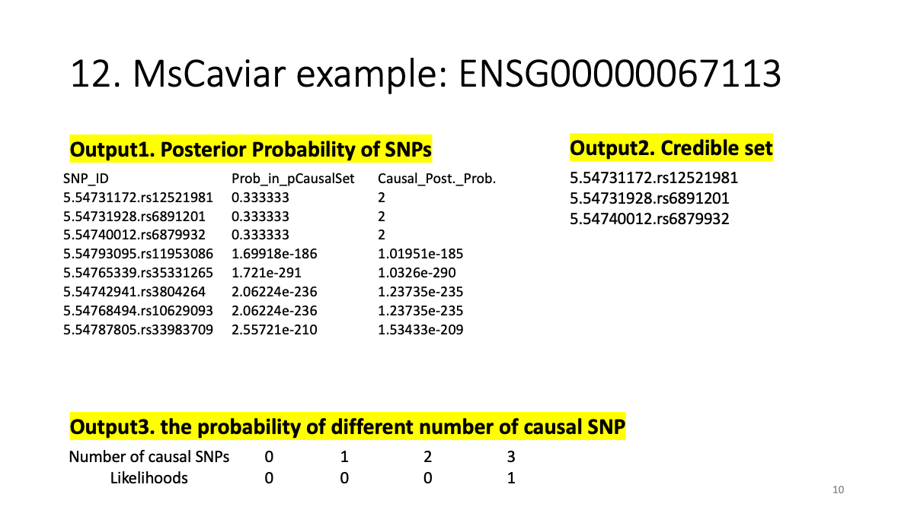
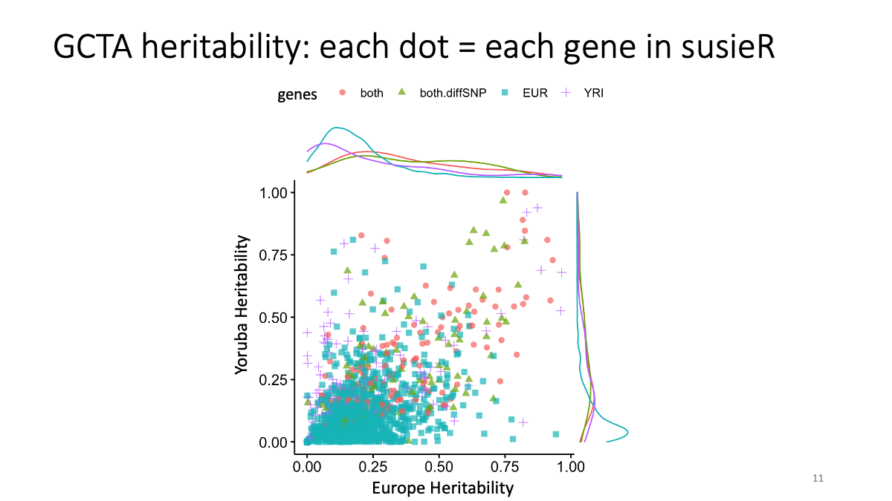
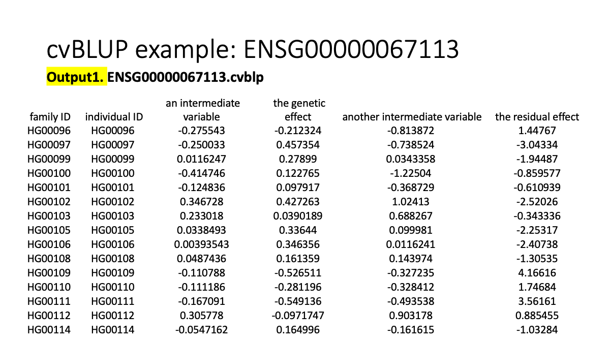
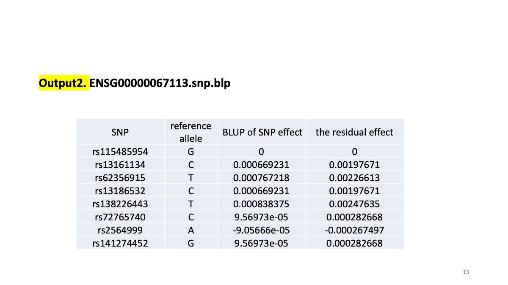
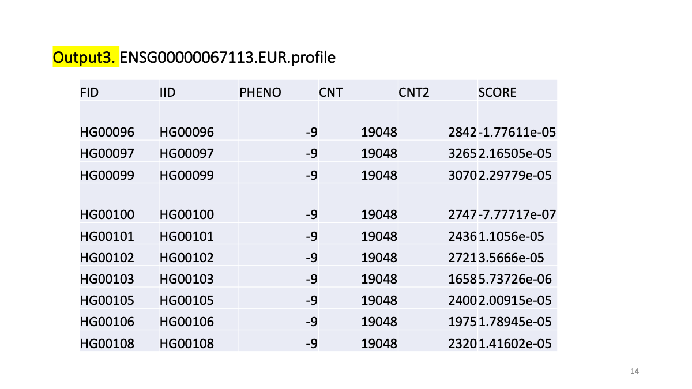

Last updated: 2020-12-26
Checks: 7 0
Knit directory: myproject/
This reproducible R Markdown analysis was created with workflowr (version 1.6.2). The Checks tab describes the reproducibility checks that were applied when the results were created. The Past versions tab lists the development history.
Great! Since the R Markdown file has been committed to the Git repository, you know the exact version of the code that produced these results.
Great job! The global environment was empty. Objects defined in the global environment can affect the analysis in your R Markdown file in unknown ways. For reproduciblity it’s best to always run the code in an empty environment.
The command set.seed(20200813) was run prior to running the code in the R Markdown file. Setting a seed ensures that any results that rely on randomness, e.g. subsampling or permutations, are reproducible.
Great job! Recording the operating system, R version, and package versions is critical for reproducibility.
Nice! There were no cached chunks for this analysis, so you can be confident that you successfully produced the results during this run.
Great job! Using relative paths to the files within your workflowr project makes it easier to run your code on other machines.
Great! You are using Git for version control. Tracking code development and connecting the code version to the results is critical for reproducibility.
The results in this page were generated with repository version 0b46d18. See the Past versions tab to see a history of the changes made to the R Markdown and HTML files.
Note that you need to be careful to ensure that all relevant files for the analysis have been committed to Git prior to generating the results (you can use wflow_publish or wflow_git_commit). workflowr only checks the R Markdown file, but you know if there are other scripts or data files that it depends on. Below is the status of the Git repository when the results were generated:
Ignored files:
Ignored: .DS_Store
Ignored: .RData
Ignored: .Rhistory
Ignored: .Rproj.user/
Ignored: analysis/.DS_Store
Ignored: analysis/11.24.2020.2.png
Ignored: analysis/11.24.2020.3.png
Ignored: analysis/11.24.2020.4.png
Ignored: analysis/11.24.2020.5.png
Ignored: analysis/11.24.2020.6.png
Ignored: analysis/11.24.2020.7.png
Ignored: analysis/11.24.2020.8.png
Ignored: analysis/11.24.2020.9.png
Ignored: genotype/
Untracked files:
Untracked: ALL.chr1.phase3_shapeit2_mvncall_integrated_v5a.20130502.genotypes.vcf.gz
Untracked: ALL.chr2.phase3_shapeit2_mvncall_integrated_v5a.20130502.genotypes.vcf.gz
Untracked: analysis/12.WIP.Rmd
Untracked: getfastqtest2.csv
Note that any generated files, e.g. HTML, png, CSS, etc., are not included in this status report because it is ok for generated content to have uncommitted changes.
These are the previous versions of the repository in which changes were made to the R Markdown (analysis/12.20.WIP.Rmd) and HTML (docs/12.20.WIP.html) files. If you’ve configured a remote Git repository (see ?wflow_git_remote), click on the hyperlinks in the table below to view the files as they were in that past version.
| File | Version | Author | Date | Message |
|---|---|---|---|---|
| html | 7f1d2f2 | mariesaitou | 2020-12-26 | Build site. |
| html | 0abb133 | mariesaitou | 2020-12-26 | Build site. |
| html | 9eb5658 | mariesaitou | 2020-12-25 | Build site. |
| Rmd | d211d79 | mariesaitou | 2020-12-25 | Add my first analysis |
cd /project2/xuanyao/marie/E-GEUV-1/LDSC/PESCA
module load plink
csvfile=/project2/xuanyao/marie/E-GEUV-1/finemap/DEG.susie.1025.BH.csv
for line in `cat ${csvfile} | grep -v ^#`
do
gene=`echo ${line} |cut -d ',' -f 1`
chr=`echo ${line} |cut -d ',' -f 9`
grep '${gene}' /project2/xuanyao/marie/E-GEUV-1/FastQTL/GEUV/EUR.chr${chr}.nominals.all.txt >> /project2/xuanyao/marie/E-GEUV-1/FastQTL/GEUV/PESCA/${gene}.zscore.EUR.txt
grep '${gene}' /project2/xuanyao/marie/E-GEUV-1/FastQTL/GEUV/EUR.chr${chr}.nominals.all.txt >> /project2/xuanyao/marie/E-GEUV-1/FastQTL/GEUV/PESCA/${gene}.zscore.EUR.txt
plink --vcf /project2/xuanyao/marie/E-GEUV-1/finemap/EUR/${gene}.EUR.genotype.recode.vcf --r --matrix --out ${gene}.EUR.LD.matrix
plink --vcf /project2/xuanyao/marie/E-GEUV-1/finemap/YRI/${gene}.Yoruba.genotype.recode.vcf --r --matrix --out ${gene}.Yoruba.LD.matrix
done
csvfile=/project2/xuanyao/marie/E-GEUV-1/finemap/DEG.susie.1025.BH.csv
for line in `cat ${csvfile} | grep -v ^#`
do
gene=`echo ${line} |cut -d ',' -f 1`
chr=`echo ${line} |cut -d ',' -f 9`
grep "${gene}" /project2/xuanyao/marie/E-GEUV-1/FastQTL/GEUV/Yoruba.chr${chr}.nominals.all.txt >> ${gene}.zscore.Yoruba.txt
grep "${gene}" /project2/xuanyao/marie/E-GEUV-1/FastQTL/GEUV/EUR.chr${chr}.nominals.all.txt >> ${gene}.zscore.EUR.txt
done
# make input dataset of the interested genes
library(dplyr)
genelist=read.csv("/project2/xuanyao/marie/E-GEUV-1/PESCA/input.1025.BH.csv", stringsAsFactors = F)
file.geno.EUR <-paste("/project2/xuanyao/marie/E-GEUV-1/finemap/EUR/",genelist[,"gene"], ".EUR.genotype.recode.vcf", sep="")
file.geno.Yoruba<-paste("/project2/xuanyao/marie/E-GEUV-1/finemap/YRI/",genelist[,"gene"], ".Yoruba.genotype.recode.vcf", sep="")
file.LD.EUR <-paste("/project2/xuanyao/marie/E-GEUV-1/LDSC/PESCA/",genelist[,"gene"], ".EUR.LD.matrix.ld", sep="")
file.LD.Yoruba<-paste("/project2/xuanyao/marie/E-GEUV-1/LDSC/PESCA/",genelist[,"gene"], ".Yoruba.LD.matrix.ld", sep="")
file.p.EUR <-paste("/project2/xuanyao/marie/E-GEUV-1/LDSC/PESCA/",genelist[,"gene"], ".zscore.EUR.txt", sep="")
file.p.Yoruba<-paste("/project2/xuanyao/marie/E-GEUV-1/LDSC/PESCA/",genelist[,"gene"], ".zscore.Yoruba.txt", sep="")
################### make all the files automatically!
# put geno/LD/zscore in each box
EURgeno <- lapply(file.geno.EUR, FUN=read.table, header = FALSE, sep = "\t", skip = 252, stringsAsFactors = F)
EURLD<-lapply(file.LD.EUR,FUN=read.table,stringsAsFactors = F, header = FALSE, sep = " ")
YRIgeno <- lapply(file.geno.Yoruba, FUN=read.table, header = FALSE, sep = "\t", skip = 252, stringsAsFactors = F)
YRILD<-lapply(file.LD.Yoruba,FUN=read.table,stringsAsFactors = F, header = FALSE, sep = " ")
for(i in 1:length(EURgeno)){
EURgeno[[i]][["V6"]]<- make.names(EURgeno[[i]][["V3"]], unique=TRUE)}
for(i in 1:length(YRIgeno)){
YRIgeno[[i]][["V6"]]<- make.names(YRIgeno[[i]][["V3"]], unique=TRUE)}
### name the col and row of the LD matrix from the vcf annotation
for(i in 1:length(EURLD)){
rownames(EURLD[[i]]) <- make.names(EURgeno[[i]][["V3"]], unique=TRUE)
colnames(EURLD[[i]]) <- make.names(EURgeno[[i]][["V3"]], unique=TRUE)}
for(i in 1:length(YRILD)){
rownames(YRILD[[i]]) <- make.names(EURgeno[[i]][["V3"]], unique=TRUE)
colnames(YRILD[[i]]) <- make.names(EURgeno[[i]][["V3"]], unique=TRUE)}
#make.names(nams, unique=TRUE)
EURp<-lapply(file.p.EUR,FUN=read.table,stringsAsFactors = F, header = FALSE, sep = " ")
YRIp<-lapply(file.p.Yoruba,FUN=read.table,stringsAsFactors = F, header = FALSE, sep = " ")
for(i in 1:length(EURp)){
EURp[[i]][["V6"]]<- make.names(EURz[[i]][["V2"]], unique=TRUE) }
for(i in 1:length(YRIp)){
YRIp[[i]][["V6"]]<- make.names(YRIz[[i]][["V2"]], unique=TRUE)}
#(1) Extract the shared SNPs from EURLD and YRILD
#(2) Extract the shared SNPs of (1) from EURz and YRIz
#(3) make a new matrix by pasting EURgeno$V1, EURgeno$V2, EURgeno$V3, EURz$V5, YRIz$V5
#(4) make two new matrices by pasting EURgeno$V3, EURgeno$V2, (EURgeno$V4 and EURgeno$V5) , EURz$V5,
remrm <- function(mat){
dat <- mat[!apply(is.na(mat), 1, all),]
dat[ ,!apply(is.na(dat), 2, all) ]
}
#(1) LD file
EURLD2 <- lapply(EURLD, remrm)
YRILD2 <- lapply(YRILD, remrm)
shared <- function(mat1, mat2){
inter <- intersect(names(mat1), names(mat2))
mat1[inter,inter]
}
#### LD matrix with only shared SNPs in 2 pops
EURLD3<- mapply(FUN=shared, EURLD2, YRILD2)
YRILD3<- mapply(FUN=shared, YRILD2, EURLD2)
#(2) shared gene extraction
subs <- function(mat1, mat2){
mat1[mat1[["V6"]] %in% names(mat2),]
}
EURp2 <- mapply(FUN=subs, EURp, EURLD3,SIMPLIFY=FALSE)
YRIp2 <- mapply(FUN=subs, YRIp, YRILD3,SIMPLIFY=FALSE)
## add zscore to the p-value table
for(i in 1:length(EURp2)){
EURp2[[i]][["V7"]]<-ifelse(sign(EURp2[[i]][["V5"]]) >= 0, -qnorm(EURp2[[i]][["V4"]]/2), qnorm(EURp2[[i]][["V4"]]/2)) }
for(i in 1:length(YRIp2)){
YRIp2[[i]][["V7"]]<-ifelse(sign(YRIp2[[i]][["V5"]]) >= 0, -qnorm(YRIp2[[i]][["V4"]]/2), qnorm(YRIp2[[i]][["V4"]]/2)) }
subs2 <- function(mat1, mat2){
mat1[mat1[["V6"]] %in% names(mat2),]
}
#(3) PAINTOR z-score with chrmosome coodinate
EURgeno2<-mapply(FUN=subs2, EURgeno, EURLD3,SIMPLIFY=FALSE)
YRIgeno2<-mapply(FUN=subs2, YRIgeno, EURLD3,SIMPLIFY=FALSE)
### combine everything
# Paintor input file (content)
combine <- function(mat1, mat2,mat3){
temp1<-data.frame(mat1$V1, mat1$V2, mat1$V6, mat2$V7, mat3$V7)
names(temp1) <- c("CHR","POS","RSID","ZSCORE.EUR","ZSCORE.YRI")
temp1
}
combined<-mapply(FUN=combine, EURgeno2, EURp2,YRIp2,SIMPLIFY=FALSE)
# paintor annotation file
anno <- function(mat1){
anno<-data.frame(rep(1,length(mat1$V1)))
names(anno) <- c("dummy")
anno
}
anno_dummy<-mapply(FUN=anno, EURgeno2,SIMPLIFY=FALSE)
# paintor LD file
EURLD<-lapply(file.LD.EUR,FUN=read.table,stringsAsFactors = F, header = FALSE, sep = " ")
# set file names
filename.z<-paste(genelist[,"gene"], "Paintor", sep=".")
filename.EUR.LD<-paste(genelist[,"gene"],"Paintor.EUR.LD", sep=".")
filename.YRI.LD<-paste(genelist[,"gene"],"Paintor.YRI.LD", sep=".")
filename.anno<-paste(genelist[,"gene"],"Paintor.annotations", sep=".")
filename.input<-paste("input.files.",genelist[,"gene"],".txt", sep=".")
input.content<-paste(genelist[,"gene"],"Paintor", sep=".")
## output PAINTOR
mapply(FUN=write.table,combined, filename.z,SIMPLIFY=FALSE,sep = " ",quote=FALSE,row.names=FALSE)
mapply(FUN=write.table,EURLD3, filename.EUR.LD,SIMPLIFY=FALSE,sep = " ",quote=FALSE,row.names = FALSE,col.names = FALSE)
mapply(FUN=write.table,YRILD3, filename.YRI.LD,SIMPLIFY=FALSE,sep = " ",quote=FALSE,row.names = FALSE,col.names = FALSE)
mapply(FUN=write.table,anno_dummy, filename.anno,SIMPLIFY=FALSE,sep = " ",quote=FALSE,row.names = FALSE)
mapply(FUN=write.table,input.content, filename.input,SIMPLIFY=FALSE,sep = " ",quote=FALSE,row.names = FALSE,col.names = FALSE)
#(5) Zscore, only three rows (SNO, EUR, YRI)
#(6) input file index of MsCaviar, ldfiles.txt -z zfiles.txt### 12.23
## Output $gene.EUR.zscores, $gene.YRI.zscores, $gene.zscores.txt, $gene.LD.txt
#setwd("/Users/saitoumarie/Dropbox/Chicago/RCC/eQTL.practice/LDSC/PESCA")
setwd("/project2/xuanyao/marie/E-GEUV-1/LDSC/PAINTOR_V3.0/files")
# cd /project2/xuanyao/marie/E-GEUV-1/LDSC/PAINTOR_V3.0/files
library(dplyr)
# input gene names
genelist=read.csv("/Users/saitoumarie/Dropbox/Chicago/RCC/eQTL.practice/LDSC/PESCA/finemapped.location.csv", stringsAsFactors = F)
#genelist=read.csv("/project2/xuanyao/marie/E-GEUV-1/LDSC/PAINTOR_V3.0/files/both.and.diff.genes.csv", stringsAsFactors = F)
# define file names for each gene
file<-paste("/project2/xuanyao/marie/E-GEUV-1/LDSC/PAINTOR_V3.0/files/",genelist[,"gene"], ".Paintor", sep="")
# read each input tiles
input <- lapply(file, FUN=read.table, header = FALSE, sep = " ", stringsAsFactors = F)
# (1) output files
for(i in 1:length(input)){
variant <- apply(input[[i]][-1,1:3], 1, paste, collapse=".")
zscore <- sapply(input[[i]][-1,4], toString, USE.NAMES=F)
output <- paste(variant, zscore, sep="\t")
write.table(output, paste(genelist[i,"gene"], "EUR.zscores", sep="."), quote=FALSE, row.names=FALSE, col.names=FALSE)
}
for(i in 1:length(input)){
variant <- apply(input[[i]][-1,1:3], 1, paste, collapse=".")
zscore <- sapply(input[[i]][-1,5], toString, USE.NAMES=F)
output <- paste(variant, zscore, sep="\t")
write.table(output, paste(genelist[i,"gene"], "YRI.zscores", sep="."), quote=FALSE, row.names=FALSE, col.names=FALSE)
}
###
#(2) # file content
library(dplyr)
# input gene names
genelist=read.csv("/Users/saitoumarie/Dropbox/Chicago/RCC/eQTL.practice/LDSC/PESCA/finemapped.location.csv", stringsAsFactors = F)
#genelist=read.csv("/project2/xuanyao/marie/E-GEUV-1/LDSC/PAINTOR_V3.0/files/both.and.diff.genes.csv", stringsAsFactors = F)
# define file names for each gene
file<-paste("/project2/xuanyao/marie/E-GEUV-1/LDSC/PAINTOR_V3.0/files/",genelist[,"gene"], ".Paintor", sep="")
# read each input tiles
input <- lapply(file, FUN=read.table, header = FALSE, sep = " ", stringsAsFactors = F)
for(i in 1:length(input)){
output <- c(paste(genelist[i,"gene"], "EUR_pruned.zscores", sep="."),
paste(genelist[i,"gene"], "YRI_pruned.zscores", sep="."))
write.table(output, paste(genelist[i,"gene"], "pruned.zscores.txt", sep="."), quote=FALSE, row.names=FALSE, col.names=FALSE)
}
for(i in 1:length(input)){
output <- c(paste(genelist[i,"gene"], "Paintor.EUR_pruned.LD", sep="."),
paste(genelist[i,"gene"], "Paintor.EUR_pruned.LD", sep="."))
write.table(output, paste(genelist[i,"gene"], "pruned.LD.txt", sep="."), quote=FALSE, row.names=FALSE, col.names=FALSE)
}
##### LD pruning (perfect LD)
# input gene names
#genelist=read.csv("/Users/saitoumarie/Dropbox/Chicago/RCC/eQTL.practice/LDSC/PESCA/finemapped.location.csv", stringsAsFactors = F)
genelist=read.csv("/project2/xuanyao/marie/E-GEUV-1/LDSC/PAINTOR_V3.0/files/both.and.diff.genes.csv", stringsAsFactors = F)
# define file names for each gene
file<-paste("/project2/xuanyao/marie/E-GEUV-1/LDSC/PAINTOR_V3.0/files/",genelist[,"gene"], ".Paintor", sep="")
#### LD pruning (duplicated elements)
for (i in 1:length(genelist[,"gene"])){
# EUR
ld <- read.table(paste("./", genelist[i,"gene"], "Paintor.EUR.LD", sep=""))
ld2 <- ld[!duplicated(ld),!duplicated(ld)] # no duplicate
zsco <- read.table(paste("./", genelist[i,"gene"],".EUR.zscores", sep=""))
zsco2 <- zsco[!duplicated(ld),]
# YRI
ld3 <- read.table(paste("./", genelist[i,"gene"], "Paintor.YRI.LD", sep=""))
ld4 <- ld3[!duplicated(ld3),!duplicated(ld3)] # no duplicate
zsco3 <- read.table(paste("./", genelist[i,"gene"],".YRI.zscores", sep=""))
zsco4 <- zsco[!duplicated(ld3),]
# get genes that are shared
shared <- intersect(zsco2[,1],zsco4[,1])
zsco5 <- zsco2[zsco2[,1] %in% shared,]
ld5 <- ld2[zsco2[,1] %in% shared, zsco2[,1] %in% shared]
zsco6 <- zsco4[zsco4[,1] %in% shared,]
ld6 <- ld4[zsco4[,1] %in% shared, zsco4[,1] %in% shared]
# output
write.table(ld5, paste("./", genelist[i,"gene"], ".Paintor.EUR_pruned.LD", sep=""), quote=FALSE, row.names=FALSE, col.names=FALSE)
write.table(zsco5, paste("./", genelist[i,"gene"],".EUR_pruned.zscores", sep=""), quote=FALSE, row.names=FALSE, col.names=FALSE, sep="\t")
write.table(ld6, paste("./", genelist[i,"gene"], ".Paintor.YRI_pruned.LD", sep=""), quote=FALSE, row.names=FALSE, col.names=FALSE)
write.table(zsco6, paste("./", genelist[i,"gene"],".YRI_pruned.zscores", sep=""), quote=FALSE, row.names=FALSE, col.names=FALSE, sep="\t")
}# Slurm
#!/bin/bash
#SBATCH --job-name=MsCAVIAR_sbatch
#SBATCH --output=MsCAVIAR_sbatch.out
#SBATCH --error=MsCAVIAR_sbatch.err
#SBATCH --time=36:00:00
#SBATCH --partition=broadwl
#SBATCH --nodes=4
#SBATCH --ntasks-per-node=20
#SBATCH --mem-per-cpu=2000
###
csvfile=/project2/xuanyao/marie/E-GEUV-1/LDSC/PAINTOR_V3.0/files/both.and.diff.genes.csv
for line in `cat ${csvfile} | grep -v ^#`
do
gene=`echo ${line} | cut -d ',' -f 1`
/project2/xuanyao/marie/E-GEUV-1/MsCAVIAR/MsCAVIAR -l ${gene}.pruned.LD.txt -z ${gene}.pruned.zscores.txt -n 358,87 -o mscaviar/mscaviar_results_${gene} -c 3 -f 1
done
##########
 # Questions and Comments.
In the example output, I found “Causal_Post._Prob.” = 2 in three SNPs. How can I interpret it? The “probability” looks larger than 2. What is “Causal_Post._Prob”? Are three SNPs in strong LD or polygenic and equally contributing to the trait?
Also, in my data, I set “causal SNP=3” but I got five SNPs.
Prob_in_pCausalSet Causal_Post._Prob. 0.0255851 0.151775 0.0877824 0.520739 0.0948189 0.56248 0.205362 1.21824 0.227096 1.34717 0.325682 1.932
Is that expected? I wonder how MSCaviar selects a credible set based on what threshold. I saw “with rho% probability, contains all causal SNPs. The default is 0.95” in the GitHub manual but could not find values around 0.95 in the output.
setwd("/Users/saitoumarie/Dropbox/Chicago/RCC/eQTL.practice/LDSC")
X1=read.csv("/Users/saitoumarie/Dropbox/Chicago/RCC/eQTL.practice/LDSC/GCTA1224.csv",stringsAsFactors = F)
library(ggplot2)
library(ggpubr)
ggscatterhist (X1, x="V.G..Vp_tr1", y="V.G..Vp_tr2",color="susie.BH",alpha=0.7, shape="susie.BH",margin.params = list(color="susie.BH")) # Comments I am not allowed to browse and copy a file from /project2/gilad. Could you copy the Rscripts or the directory into somewhere in /project2/xuanyao? Alternatively, I will get permission of Yoav and will talk with IT team to give me permission to enter the directory.
module load plink
export PATH="$PATH:/home/maries1/gcta_1.93.2beta"
# csvfile=/project2/xuanyao/marie/E-GEUV-1/LDSC/PAINTOR_V3.0/files/both.and.diff.genes.csv
# REML analysis with the --reml-pred-rand option to output the BLUP solutions of the individuals (i.e. estimate of total genetic value of each individual)
gcta64 --reml --grm ENSG00000067113 --pheno phen/ENSG00000067113.phen --cvblup --out cvBLUP/ENSG00000067113
# To obtain cvBLUP solutions for the SNP effects
gcta64 --bfile ENSG00000067113 --blup-snp cvBLUP/ENSG00000067113.indi.cvblp --out cvBLUP/ENSG00000067113
gcta64 --bfile ENSG00000067113.EandY --blup-snp cvBLUP/ENSG00000067113.indi.cvblp --out cvBLUP/ENSG00000067113
# remove duplicated SNP (sometimes multiallelic ) https://www.biostars.org/p/267255/
cut -f 2 ENSG00000067113.EandY.bim | sort | uniq -d > 1.dups
plink --bfile ENSG00000067113.EandY --exclude 1.dups --make-bed --out ENSG00000067113.EandY;
# To compute the polygenic risk score (PRS)
plink --bfile ENSG00000067113.EandY --pheno phen/ENSG00000067113.phen --score cvBLUP/ENSG00000067113.snp.blp 1 2 3 --out cvBLUP/ENSG00000067113EUR
# reads variant IDs from column 1, allele codes from column 2, and scores from column 3.
plink --bfile test --score test.snp.blp 1 2 3  
Comments